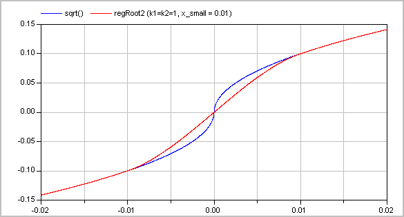

Utility models to construct fluid components (should not be used directly)
Extends from Modelica.Icons.UtilitiesPackage (Icon for utility packages).
| Name | Description |
|---|---|
| Check whether boundary definition is correct | |
| Anti-symmetric square root approximation with finite derivative in the origin | |
| Derivative of regRoot | |
| Anti-symmetric square approximation with non-zero derivative in the origin | |
| Anti-symmetric power approximation with non-zero derivative in the origin | |
| Anti-symmetric approximation of square root with discontinuous factor so that the first derivative is finite and continuous | |
| Anti-symmetric approximation of square with discontinuous factor so that the first derivative is non-zero and is continuous | |
| Approximation of a general step, such that the characteristic is continuous and differentiable | |
| Evaluate polynomial of order 3 that passes the origin with a predefined derivative | |
| Co-monotonic and C1 smooth regularization function | |
| Evaluate a cubic Hermite spline | |
| Evaluate a cubic Hermite spline, return value and derivative |
 Modelica.Fluid.Utilities.checkBoundary
Modelica.Fluid.Utilities.checkBoundaryCheck whether boundary definition is correct
Extends from Modelica.Icons.Function (Icon for functions).
| Name | Description |
|---|---|
| mediumName | |
| substanceNames[:] | Names of substances |
| singleState | |
| define_p | |
| X_boundary[:] | |
| modelName |
Modelica.Fluid.Utilities.regRootAnti-symmetric square root approximation with finite derivative in the origin
This function approximates sqrt(abs(x))*sgn(x), such that the derivative is finite and smooth in x=0.
| Function | Approximation | Range |
|---|---|---|
| y = regRoot(x) | y ~= sqrt(abs(x))*sgn(x) | abs(x) >>delta |
| y = regRoot(x) | y ~= x/sqrt(delta) | abs(x) << delta |
With the default value of delta=0.01, the difference between sqrt(x) and regRoot(x) is 16% around x=0.01, 0.25% around x=0.1 and 0.0025% around x=1.
Extends from Modelica.Icons.Function (Icon for functions).
| Name | Description |
|---|---|
| x | |
| delta | Range of significant deviation from sqrt(abs(x))*sgn(x) |
| Name | Description |
|---|---|
| y |
Modelica.Fluid.Utilities.regRoot_derDerivative of regRoot
Extends from Modelica.Icons.Function (Icon for functions).
| Name | Description |
|---|---|
| x | |
| delta | Range of significant deviation from sqrt(x) |
| dx | Derivative of x |
| Name | Description |
|---|---|
| dy |
Modelica.Fluid.Utilities.regSquareAnti-symmetric square approximation with non-zero derivative in the origin
This function approximates x^2*sgn(x), such that the derivative is non-zero in x=0.
| Function | Approximation | Range |
|---|---|---|
| y = regSquare(x) | y ~= x^2*sgn(x) | abs(x) >>delta |
| y = regSquare(x) | y ~= x*delta | abs(x) << delta |
With the default value of delta=0.01, the difference between x^2 and regSquare(x) is 41% around x=0.01, 0.4% around x=0.1 and 0.005% around x=1.
Extends from Modelica.Icons.Function (Icon for functions).
| Name | Description |
|---|---|
| x | |
| delta | Range of significant deviation from x^2*sgn(x) |
| Name | Description |
|---|---|
| y |
Modelica.Fluid.Utilities.regPowAnti-symmetric power approximation with non-zero derivative in the origin
This function approximates abs(x)^a*sign(x), such that the derivative is positive, finite and smooth in x=0.
| Function | Approximation | Range |
|---|---|---|
| y = regPow(x) | y ~= abs(x)^a*sgn(x) | abs(x) >>delta |
| y = regPow(x) | y ~= x*delta^(a-1) | abs(x) << delta |
Extends from Modelica.Icons.Function (Icon for functions).
| Name | Description |
|---|---|
| x | |
| a | |
| delta | Range of significant deviation from x^a*sgn(x) |
| Name | Description |
|---|---|
| y |
Modelica.Fluid.Utilities.regRoot2Anti-symmetric approximation of square root with discontinuous factor so that the first derivative is finite and continuous
Approximates the function
y = if x ≥ 0 then sqrt(k1*x) else -sqrt(k2*abs(x)), with k1, k2 ≥ 0
in such a way that within the region -x_small ≤ x ≤ x_small, the function is described by two polynomials of third order (one in the region -x_small .. 0 and one within the region 0 .. x_small) such that
Typical screenshots for two different configurations are shown below. The first one with k1=k2=1:

and the second one with k1=1 and k2=3:

The (smooth) derivative of the function with k1=1, k2=3 is shown in the next figure:

Literature
Extends from Modelica.Icons.Function (Icon for functions).
| Name | Description |
|---|---|
| x | abscissa value |
| x_small | approximation of function for |x| <= x_small |
| k1 | y = if x>=0 then sqrt(k1*x) else -sqrt(k2*|x|) |
| k2 | y = if x>=0 then sqrt(k1*x) else -sqrt(k2*|x|) |
| use_yd0 | = true, if yd0 shall be used |
| yd0 | Desired derivative at x=0: dy/dx = yd0 |
| Name | Description |
|---|---|
| y | ordinate value |
Modelica.Fluid.Utilities.regSquare2Anti-symmetric approximation of square with discontinuous factor so that the first derivative is non-zero and is continuous
Approximates the function
y = if x ≥ 0 then k1*x*x else -k2*x*x, with k1, k2 > 0
in such a way that within the region -x_small ≤ x ≤ x_small, the function is described by two polynomials of third order (one in the region -x_small .. 0 and one within the region 0 .. x_small) such that
A typical screenshot for k1=1, k2=3 is shown in the next figure:

The (smooth, non-zero) derivative of the function with k1=1, k2=3 is shown in the next figure:

Literature
Extends from Modelica.Icons.Function (Icon for functions).
| Name | Description |
|---|---|
| x | abscissa value |
| x_small | approximation of function for |x| <= x_small |
| k1 | y = (if x>=0 then k1 else k2)*x*|x| |
| k2 | y = (if x>=0 then k1 else k2)*x*|x| |
| use_yd0 | = true, if yd0 shall be used |
| yd0 | Desired derivative at x=0: dy/dx = yd0 |
| Name | Description |
|---|---|
| y | ordinate value |
Modelica.Fluid.Utilities.regStepApproximation of a general step, such that the characteristic is continuous and differentiable
This function is used to approximate the equation
y = if x > 0 then y1 else y2;
by a smooth characteristic, so that the expression is continuous and differentiable:
y = smooth(1, if x > x_small then y1 else
if x < -x_small then y2 else f(y1, y2));
In the region -x_small < x < x_small a 2nd order polynomial is used for a smooth transition from y1 to y2.
Extends from Modelica.Icons.Function (Icon for functions).
| Name | Description |
|---|---|
| x | Abscissa value |
| y1 | Ordinate value for x > 0 |
| y2 | Ordinate value for x < 0 |
| x_small | Approximation of step for -x_small <= x <= x_small; x_small >= 0 required |
| Name | Description |
|---|---|
| y | Ordinate value to approximate y = if x > 0 then y1 else y2 |
Modelica.Fluid.Utilities.evaluatePoly3_derivativeAtZeroEvaluate polynomial of order 3 that passes the origin with a predefined derivative
Extends from Modelica.Icons.Function (Icon for functions).
| Name | Description |
|---|---|
| x | Value for which polynomial shall be evaluated |
| x1 | Abscissa value |
| y1 | y1=f(x1) |
| y1d | First derivative at y1 |
| y0d | First derivative at f(x=0) |
| Name | Description |
|---|---|
| y |
Modelica.Fluid.Utilities.regFun3Co-monotonic and C1 smooth regularization function
Approximates a function in a region between x0 and x1
such that
In this region, a continuation is constructed from the given points
(x0, y0), (x1, y1) and the respective
derivatives. For this purpose, a single polynomial of third order or two
cubic polynomials with a linear section in between are used [Gasparo
and Morandi, 1991]. This algorithm was extended with two additional
conditions to avoid saddle points with zero/infinite derivative that lead to
integrator step size reduction to zero.
This function was developed for pressure loss correlations properly
addressing the static head on top of the established requirements
for monotonicity and smoothness. In this case, the present function
allows to implement the exact solution in the limit of
x1-x0 -> 0 or y1-y0 -> 0.
Typical screenshots for two different configurations
are shown below. The first one illustrates five different settings of xi and yid:

The second graph shows the continuous derivative of this regularization function:

Literature
Extends from Modelica.Icons.Function (Icon for functions).
| Name | Description |
|---|---|
| x | Abscissa value |
| x0 | Lower abscissa value |
| x1 | Upper abscissa value |
| y0 | Ordinate value at lower abscissa value |
| y1 | Ordinate value at upper abscissa value |
| y0d | Derivative at lower abscissa value |
| y1d | Derivative at upper abscissa value |
| Name | Description |
|---|---|
| y | Ordinate value |
| c | Slope of linear section between two cubic polynomials or dummy linear section slope if single cubic is used |
Modelica.Fluid.Utilities.cubicHermiteEvaluate a cubic Hermite spline
Extends from Modelica.Icons.Function (Icon for functions).
| Name | Description |
|---|---|
| x | Abscissa value |
| x1 | Lower abscissa value |
| x2 | Upper abscissa value |
| y1 | Lower ordinate value |
| y2 | Upper ordinate value |
| y1d | Lower gradient |
| y2d | Upper gradient |
| Name | Description |
|---|---|
| y | Interpolated ordinate value |
Modelica.Fluid.Utilities.cubicHermite_withDerivativeEvaluate a cubic Hermite spline, return value and derivative
Extends from Modelica.Icons.Function (Icon for functions).
| Name | Description |
|---|---|
| x | Abscissa value |
| x1 | Lower abscissa value |
| x2 | Upper abscissa value |
| y1 | Lower ordinate value |
| y2 | Upper ordinate value |
| y1d | Lower gradient |
| y2d | Upper gradient |
| Name | Description |
|---|---|
| y | Interpolated ordinate value |
| dy_dx | Derivative dy/dx at abscissa value x |